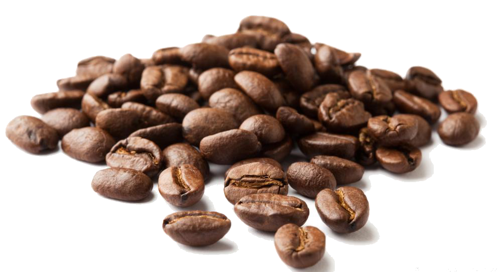

Kopi.

Kopi adalah minuman hasil seduhan biji kopi yang telah disangrai dan dihaluskan menjadi bubuk. Kopi merupakan salah satu komoditas di dunia yang dibudidayakan lebih dari 50 negara.
Pemerosesan kopi sebelum dapat diminum melalui proses panjang, yaitu dari pemanenan biji kopi yang telah matang, baik dengan cara mesin maupun dengan tangan, kemudian dilakukan pemrosesan biji kopi dan pengeringan sebelum menjadi kopi gelondong. Proses selanjutnya, yaitu penyangraian dengan tingkat derajat yang bervariasi. Setelah penyangraian, biji kopi digiling atau dihaluskan menjadi bubuk kopi sebelum kopi dapat diminum.
Biji Kopi.
Arabika.
Kopi arabika merupakan tipe kopi tradisional dengan cita rasa terbaik. Sebagian besar kopi yang ada dibuat dengan menggunakan biji kopi jenis ini. Kopi ini berasal dari Etiopia dan sekarang telah dibudidayakan di berbagai belahan dunia, mulai dari Amerika Latin, Afrika Tengah, Afrika Timur, India, dan Indonesia.
Robusta.
Kopi robusta pertama kali ditemukan di Kongo pada tahun 1898. Kopi robusta dapat dikatakan sebagai kopi kelas 2, karena rasanya yang lebih pahit, sedikit asam, dan mengandung kafeina dalam kadar yang jauh lebih banyak.
Luwak.
Kopi luak merupakan kopi dengan harga jual tertinggi di dunia. Proses terbentuknya dan rasanya yang unik menjadi alasan utama tingginya harga jual kopi jenis ini. Pada dasarnya, kopi ini merupakan kopi jenis arabika. Biji kopi ini kemudian dimakan oleh luwak atau sejenis musang. Akan tetapi, tidak semua bagian biji kopi ini dapat dicerna oleh hewan ini. Bagian dalam biji ini kemudian akan keluar bersama kotorannya. Karena telah bertahan lama di dalam saluran pencernaan luak, biji kopi ini telah mengalami fermentasi singkat oleh bakteri alami di dalam perutnya yang memberikan cita rasa tambahan yang unik.
Proses Pengolahan.
Kopi yang dapat diminum akan menjalani serangkaian proses pengolahan yang panjang dari biji kopi untuk menjadi minuman kopi. Berbagai metode pengolahan biji kopi telah dicoba untuk menghasilkan minuman kopi terbaik. Dalam hal ini, proses penanaman juga turut berperan dalam menciptakan cita rasa kopi yang baik.
Pemanenan dan pemisahan cangkang.
Pemanenan biji kopi biasanya dilakukan secara manual dengan tangan. Pada tahap selanjutnya, biji kopi yang telah dipanen ini akan dipisahkan cangkangnya. Terdapat dua metode yang umum dipakai, yaitu dengan pengeringan dan penggilingan dengan mesin.
Pemanggangan.
Proses ini secara langsung dapat meningatkan cita rasa dan warna dari biji kopi. Secara fisik, perubahan biji kopi terlihat dari pengeringan biji dan penurunan bobot secara keseluruhan. Pori-pori di sekeliling permukaan biji pun akan terlihat lebih jelas. Warna cokelat dari biji kopi juga akan terlihat memekat.
Penggilingan.
Penggilingan yang baik akan menghasilkan rasa, aroma, dan penampilan yang baik. Hasil penggilingan ini harus segera dimasukkan dalam wadah kedap udara agar tidak terjadi perubahan cita rasa kopi.
Perebusan.
Perebusan merupakan langkah akhir dari pengolahan biji kopi hingga siap dikonsumsi. Untuk menciptakan minuman kopi yang bercita rasa tinggi, perebusan biji kopi harus dilakukan dengan baik dan sempurna.
Dekafeinasi.
Dekafeinasi atau penghilangan kafeina termasuk ke dalam metode tambahan dari keseluruhan proses pengolahan kopi. Dekafeinasi banyak digunakan untuk mengurangi kadar kafeina di dalam kopi agar rasanya tidak terlalu pahit. Selain itu, dekafeinasi juga digunakan untuk menekan efek samping dari aktivitas kafeina di dalam tubuh.